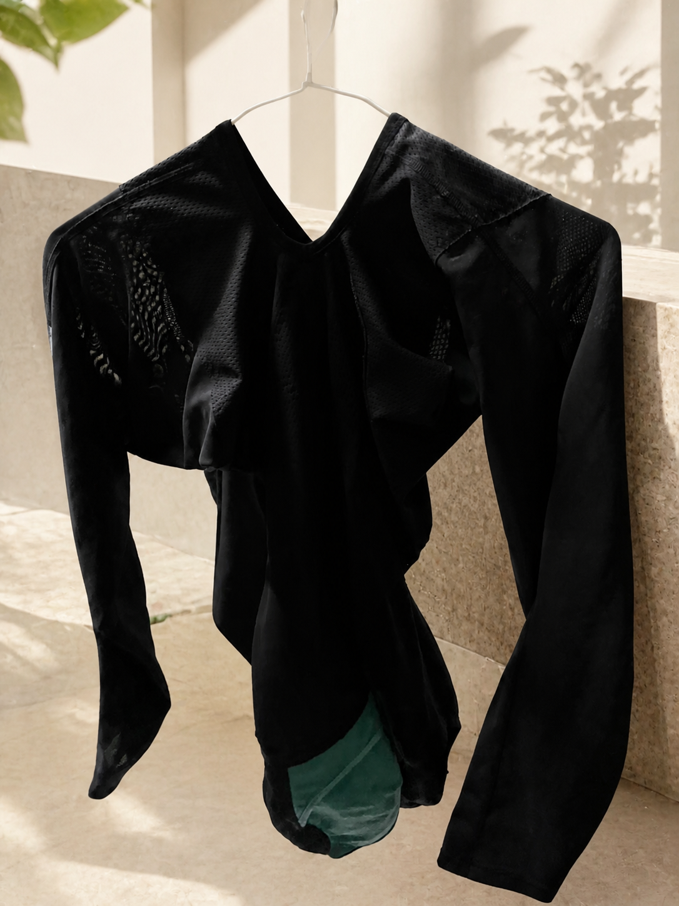

一、手洗
建議優先手洗。將衣物翻到反面，洗、按、晾三步完成。
01 反面溫和洗滌
使用中性洗劑，例如白鴿手洗精。將筋膜衣翻至反面輕柔按洗，不搓揉、不長時間浸泡。
02 大毛巾輕壓吸水
洗淨後平放在大毛巾上，以按壓方式吸走水分，不扭轉、不大力擰乾。
03 反面陰涼晾乾
整理版型後倒掛於陰涼通風處；可搭配除濕機或電風扇加速乾燥，並建議保持反面晾曬。
步驟簡單、避免拉扯與高溫，維持機能衣物的版型與彈性

保留衣物原本的機能布料、車縫線與綠色內層；清洗前翻面，洗後整理版型並避開高溫與直射陽光。
建議優先手洗。將衣物翻到反面，洗、按、晾三步完成。
使用中性洗劑，例如白鴿手洗精。將筋膜衣翻至反面輕柔按洗，不搓揉、不長時間浸泡。
洗淨後平放在大毛巾上，以按壓方式吸走水分，不扭轉、不大力擰乾。
整理版型後倒掛於陰涼通風處；可搭配除濕機或電風扇加速乾燥，並建議保持反面晾曬。
白淨手繪風 3 步驟：洗得乾淨、保護骨架、常溫乾燥。
使用羽絨／機能衣專用中性洗劑，零柔軟精，避免堵塞纖維孔隙。
扣好排扣＋加厚洗衣袋，選擇 LG 柔洗或同等級的低速柔洗行程。
整理版型後在室內平鋪＋除濕機抽濕，避免烘乾、熨燙與曝曬。
實際洗護方式以產品洗標為最高原則；若洗標與本頁不同，請優先遵守洗標。洗衣機沒有 LG 柔洗時，可選擇同等低速、低攪動的柔洗行程。白鴿為中性手洗精示例，並非唯一指定品牌。